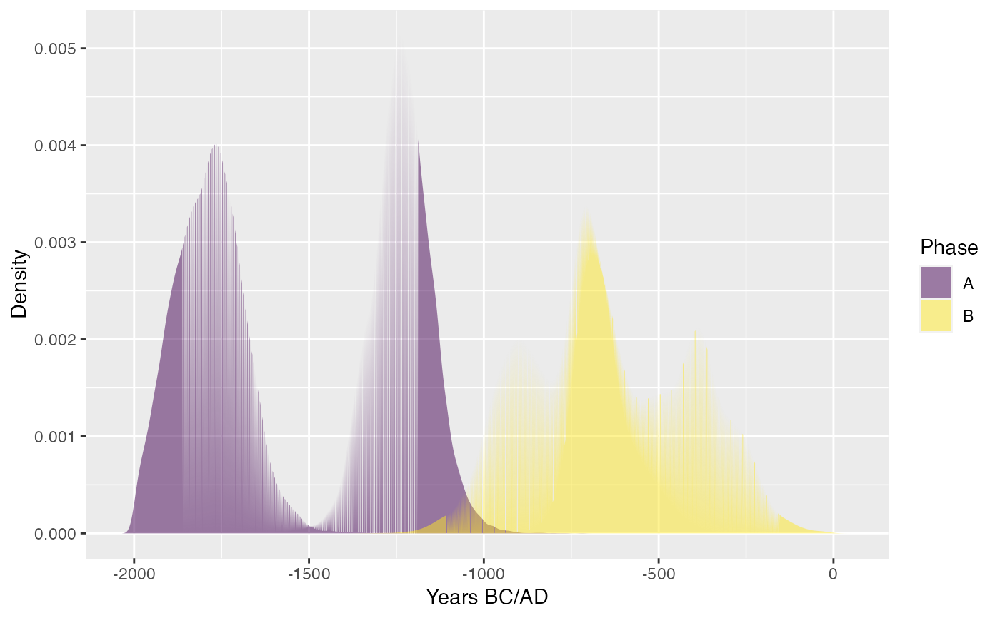
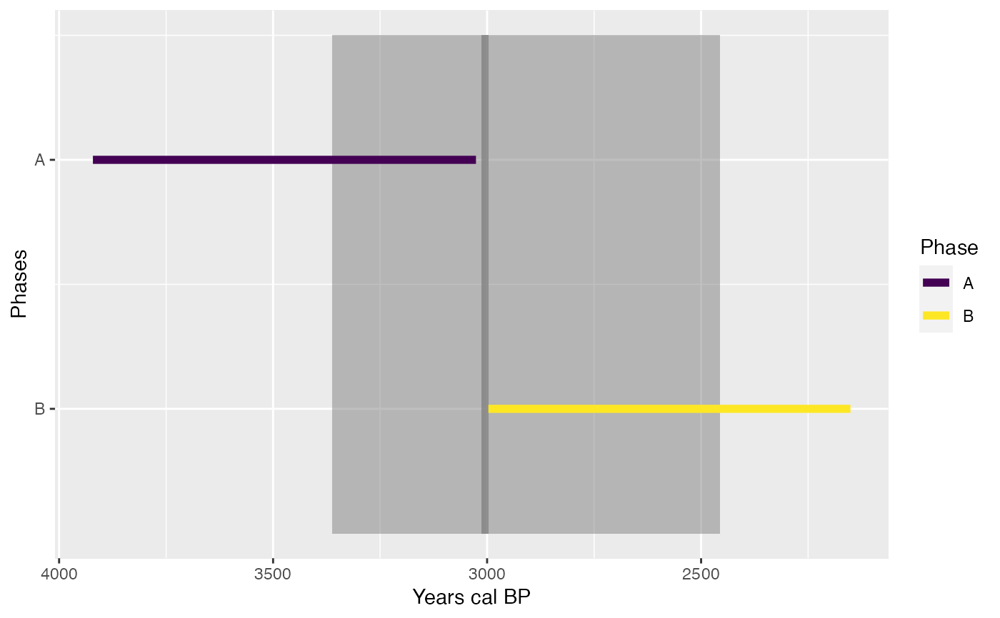

Plot
# S4 method for MCMC,missing plot( x, calendar = c("BCAD", "BP"), density = TRUE, n = 512, interval = c("ci", "hpdi"), level = 0.95, decreasing = TRUE, elapsed = FALSE, origin = 1, ... ) # S4 method for PhasesMCMC,missing plot( x, calendar = c("BCAD", "BP"), level = 0.95, n = 512, decreasing = TRUE, elapsed = FALSE, origin = 1, succession = is_ordered(x), ... )
Arguments
| x | An |
|---|---|
| calendar | A |
| density | A |
| n | An |
| interval | A |
| level | A length-one |
| decreasing | A |
| elapsed | A |
| origin | A length-one |
| ... | Extra parameters to be passed to |
| succession | A |
Methods (by class)
x = MCMC,y = missing: Plots of credible intervals or HPD regions of a series of events.x = PhasesMCMC,y = missing: Plots the characteristics of a group of events (phase).
See also
Author
A. Philippe, M.-A. Vibet, T. S. Dye, N. Frerebeau
Examples
#> mean sd min q1 median q3 #> Event.2 -637.9158 270.53856 -1348.66 -888.9817 -657.737 -386.2120 #> Event.1 -1785.1308 98.95886 -1999.99 -1856.6725 -1784.640 -1719.0675 #> Event.22 -656.0726 90.62400 -1229.22 -716.6123 -672.340 -610.9733 #> Event.12 -1235.5136 86.03571 -1863.97 -1288.5175 -1235.085 -1180.9425 #> max CI_lower CI_upper #> Event.2 -5.14937 -1046.370 -202.127 #> Event.1 -971.03900 -1981.050 -1610.600 #> Event.22 -66.80520 -802.848 -449.986 #> Event.12 -718.76100 -1400.900 -1064.410plot(events, interval = "hpdi", calendar = "BC")## Compute phases phases <- phase(events, groups = list(A = c(2, 4), B = c(1, 3)), ordered = TRUE) summary(phases)#> $A #> mean sd min q1 median q3 #> start -1785.1618 98.79804 -1999.99 -1856.6800 -1784.640 -1719.0675 #> end -1235.4825 86.02219 -1832.90 -1288.5175 -1235.055 -1180.8975 #> duration 549.6793 130.69325 4.20 462.9325 551.330 638.2125 #> max CI_lower CI_upper #> start -1222.980 -1981.05 -1610.60 #> end -718.761 -1403.84 -1067.44 #> duration 1156.261 296.28 804.95 #> #> $B #> mean sd min q1 median q3 max #> start -772.9709 147.1085 -1348.660 -889.6788 -749.3505 -671.3958 -206.69900 #> end -521.0175 167.8882 -1049.560 -670.4143 -536.9485 -383.5560 -5.14937 #> duration 251.9534 136.6735 0.004 149.9530 247.9470 343.9115 878.74200 #> CI_lower CI_upper #> start -1059.010 -501.118 #> end -775.518 -214.316 #> duration 0.246 485.952 #>## Plot phases plot(phases, succession = FALSE, calendar = "BCAD")plot(phases, succession = TRUE, calendar = "BP")